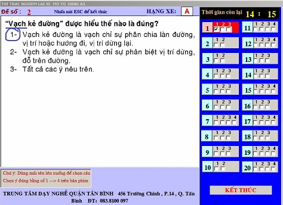

Mẹo thi phần lý thuyết
Những câu có 2 đáp án mà trong câu hỏi có xuất hiện từ “Những” hoặc từ “Các” thi chọn cả 2 đáp
án(cái này luôn luôn đúng, vì thế trong câu ưu tiên xét cái này trước, nhớ là chỉ đúng cho câu
hỏi có 2 đáp án thôi nhé, câu nào 3 đáp án thì không còn đúng nữa).
Những câu mà trong dấu ngoặc kép ” “ có các từ: Vạch – phố– giải – phần –>> Chọn đáp án
(1).



Những câu mà trong dấu ngoặc kép ” “ có các từ: Ưu – phương- làn –>> Chọn đáp án (2). (Trừ câu 9
đề 1, câu này các bạn buộc phải tự nhớ).

Những câu hỏi về hành vi bị nghiêm cấm mà trong đáp án có xuất hiện các từ như: “Bị nghiêm cấm”,
“Không được phép”, “Không được mang vác”, “Thiếu văn hóa giao thông”…Những câu đại loại tương tự
như vậy thì chọn đáp án đó.


Hỏi về người điều khiển giao thông: Có từ “Giang tay” ->> Chọn đáp án (1); “Giơ tay”->> Chọn đáp
án (2).
Trong đáp án mà có các con số sau đây là đáp án: 5 mét, 5 năm, 0.25, 50, 18 tuổi, 40km/h

Ưu tiên chấp hành theo hiệu lệnh của người “điều khiển giao thông” và “biển báo hiệu tạm
thời“
Tại nơi giao nhau “Không có báo hiệu đi theo vòng xuyến” ->> Chọn đáp án “Nhường đường cho người
đi từ bên phải tới”; Ngược lại “Có biển báo đi theo vòng xuyến” ->> Chọn đáp án “Nhường đường
cho người đi từ bên trái tới”
Hỏi ở “trên cầu”, “trong đường hầm” có được quay đầu xe hay không? –>> Chọn đáp án “Không được
quay đầu xe”, nhớ kỹ bất cứ trường hợp nào trong hầm hay trên cầu vượt cũng “không được phép
quay đầu xe”.
Câu hỏi về tốc độ tối đa cho phép là 40km/h hoặc 50km/h->> Chọn đáp án có từ “Xe gắn máy” ở cuối
câu.